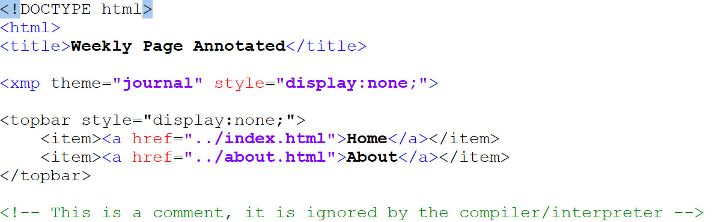

<topbar style="display:none;">
<item><a href="../index.html">Home</a></item>
<item><a href="../about.html">About</a></item>
</topbar>
<!-- This is a comment, it is ignored by the compiler/interpreter -->
### Page Title and Navigation:
The code that creates the page title, navigation, and sets the strapdown.js theme (journal) looks like this:

If you need to add another link to a new page, add an item in the topbar style list like so:
`<item><a href="../newitem.html">New Item<a/></item>`
-----
### Headers:
The syntax to create a header is:
`### Headers:`
The number of ## correspond to the header number, which corresponds to the size.
# H1 Header
<p></p>
## H2 Header
<p></p>
### H3 Header
<p></p>
#### H4 Header
<p></p>
##### H5 header
<p></p>
###### H6 Header
Use the header tag to label different sections of text on your page.
-----
### Paragraphs:
Any text written on one or more consecutive lines, separated by one or more blank lines will be formatted as a paragraph, like this.
A blank line fillowed by more text will create a new paragraph.
-----
### Adding emphasis:
`To italicize text, *surround text in single asterisks.*`
To italicize text, *surround text in single asterisks.*
`To make text bold, **surround text in double asterisks.**`
To make text bold, **surround text in double asterisks.**
`_Single_ and __double__ underscores also work, if that's your preference.`
_Single_ and __double__ underscores also work, if that's your preference.
-----
### Lists:
Here is a list:
* Item 1
* Item 2
List syntax:
`* Item 1`
`* Item 2`
-----
### Horizontal Rules:
A horizontal rule can be used to divide this paragraph
*****
From this paragraph. The syntax is:
`*****`
or
`-----`
among a few options.
-----
### Images:
<p></p>
##### Local Images:
Local images are displayed using this syntax:
``
Which will appear like this:

The ./ indicates that the image file is in the same folder as the .html file displaying it. If this is not the case, be sure to specify the correct path, for example (./images/strandbeest/strandbeest.jpg).
##### Remote Images:
Remote images are displayed using this syntax:
``
Which will appear like this:

The alternate text will appear if the image asset cannot be found or if the device is set to block loading images, among other reasons, and will also be read by screen readers (right click and view source to try to spot why this image won't display):

-----
### HTML tags in Markdown
HTML features that are not available through Markdown can still be accessed by using html tags within the Markdown.
For example, resizing images:
*****
`<img src="./strandbeest.jpg" alt="strandbeest" width="200"/>`
<img src="./strandbeest.jpg" alt="strandbeest" width="200"/>
*****
`<img src="./strandbeest.jpg" alt="strandbeest" width="600"/>`
<img src="./strandbeest.jpg" alt="strandbeest" width="600"/>
*****
YouTube videos can be embedded by clicking "copy embed code" and pasting an iframe element in the file, like this:
<iframe width="600" height="400" src="https://www.youtube.com/embed/LewVEF2B_pM" title="YouTube video player" frameborder="0" allow="accelerometer; autoplay; clipboard-write; encrypted-media; gyroscope; picture-in-picture" allowfullscreen></iframe>